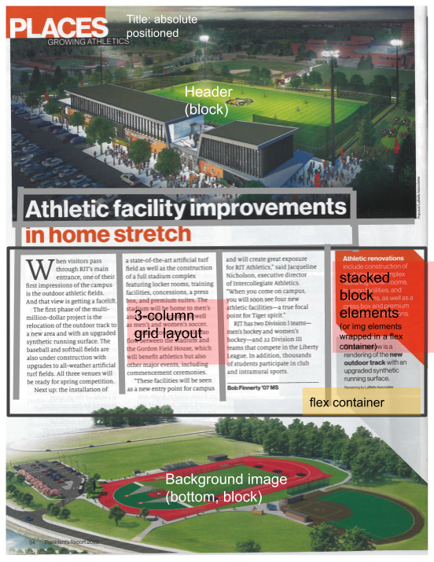
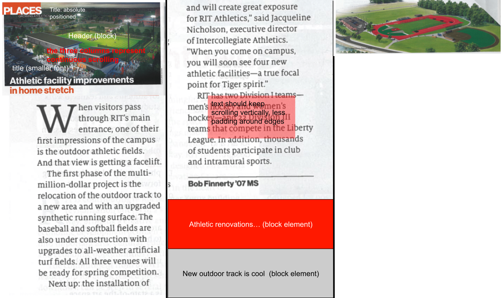

Part 1: Build to Spec
Overview & Goals
For project 1, I will be creating a portfolio of some of the past projects I have worked on. The reference I will be attempting to recreate is from the pre-chosen layouts. It is a paper detailing RIT's athletic facility improvements from an 2022 President's Report. Some preliminary thoughts on what I will have for the final product:
- A home page which displays all of my projects in some accessible, neat way
- Stacked sections for each of my projects
- An "about me" section, links to my resume and GitHub, etc...
I am seeking to create a website that is clean, easy to navigate, and professional for any prospective employers. As a result, the layout from RIT's news worked well for me. I can have a main banner at the top with my name and maybe a couple things about me, and then stack my projects below, perhaps in an additional section too and have them go three-wide. I'm not sure if I will keep the banner at the bottom of the screen but I could definitely put my contact info with a nice background.
Original source PDFOutline sketch for desktop

Outline sketch for mobile

Link to spec page
Build to spec page
Part 2: Adapt to Content
Major changes
I will say there were some major changes because RIT's design didn't really work with my intended design. I'll go over them below, but the barebones structure of the site is still similar to Phase 1.
- I didn't like how the title text bleeds over below the image, so I just moved everything into the header image.
- The 3-column grid layout has been kept but the side "diamond-like" objects have been removed because they don't fit.
- The 3-column grid has been replaced with three projects, with likely more to come as I make more things.
- The bottom background image is smaller, and has been filled with my contact info.
- For responsive design, everything becomes stacked on top of each other and font sizes grow and shrink as needed to be more visible. The "responsiveness" will kick in at 960px screen width, with further elements changing at 600px width.
- Objects that can be clicked will grow in size when hovered on a desktop.
I had fun with this project. I think I'll continue to use this portfolio because it suits my needs and is a portfolio piece itself.